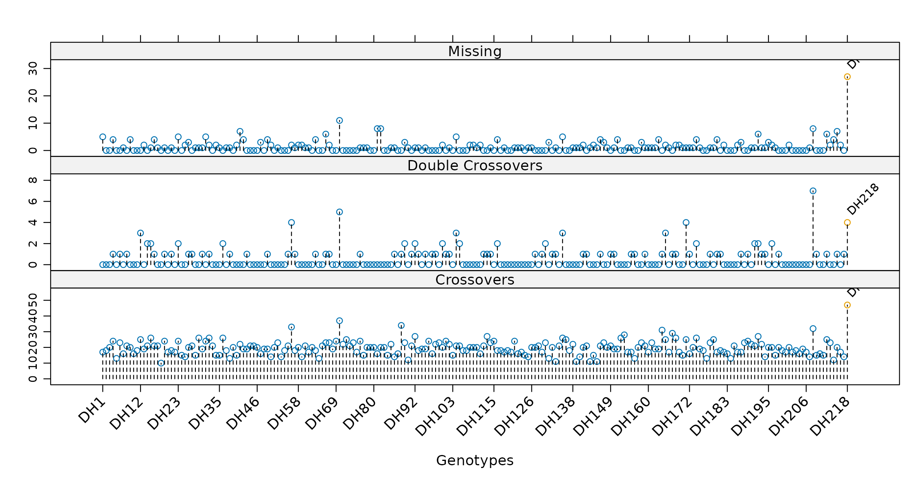
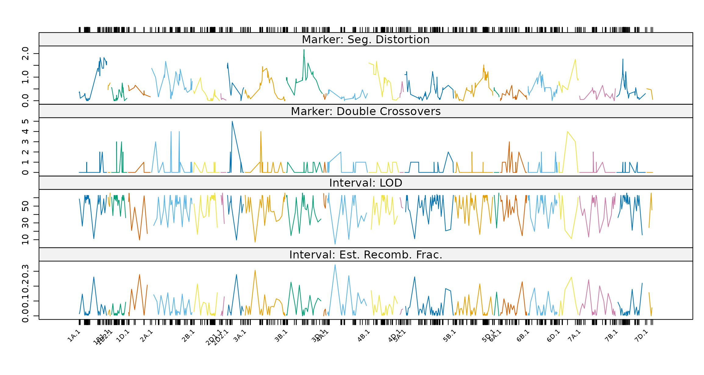

ASMap provides functions that calculate linkage map statistics both across the markers for every genotype and across the markers and intervals of the genome. These may then be profiled on simultaneous lattice panels, which permits the attributes of a map to be diagnosed rapidly.
In each case a calculation function is paired with a profiling function. The profiling function calls its numerical counterpart, plots the result, and returns the statistics invisibly.
| Calculation | Profiling | Applies to |
|---|---|---|
statGen() |
profileGen() |
Individual genotypes |
statMark() |
profileMark() |
Markers and intervals |
Genotype statistics
Three statistics may be calculated for each genotype across the
marker set nominated by chr.
stat.type |
Statistic |
|---|---|
"xo" |
Number of crossovers |
"dxo" |
Number of double crossovers |
"miss" |
Number of missing values |
Setting bychr = TRUE profiles the genotypes separately
for each linkage group.
The crossover statistics apply only to constructed maps, but they are the two most informative indicators of map quality. An inflated crossover or double crossover rate for a genotype indicates a departure from the assumptions of Mendelian genetics.
The expected rate can be derived for a given population. In a doubled haploid wheat population of size 100, one recombination corresponds to approximately 1 cM; a chromosome of length 200 cM would therefore be expected to exhibit 200 random crossovers, giving each genotype an expected recombination rate of 2. Wheat being hexaploid, complete coverage of the genome implies an expected rate of approximately 42 for any genotype. Incomplete coverage reduces this figure.
Genotypes departing significantly from an expected rate are
identified by supplying that rate to the xo.lambda argument
of profileGen().
profileGen(mapDH, bychr = FALSE, stat.type = c("xo", "dxo", "miss"),
id = "Genotype", xo.lambda = 25, layout = c(1, 3), lty = 2)
Genotype profiles of missing values, double recombinations and
recombinations for mapDH.
The three statistics are displayed for each genotype in the order in
which they appear in mapDH. Plotting them together allows
problematic genotypes to be recognised at once: the line DH218 is
identified here as having an inflated recombination rate, and its
removal would be expected to improve the quality of the map. The
layout and lty arguments are passed to the
underlying lattice function xyplot().
profileGen()returns its statistics invisibly, including a logical vector namedxo.lambdamarking the genotypes it has flagged. This pairs directly withsubsetCross(), which removes the offending individuals while keeping any pulled-marker elements consistent.
Marker and interval statistics
profileMark() profiles statistics associated with the
markers or with the intervals between them. Any combination may be
displayed simultaneously, including combinations drawn from both
groups.
Marker stat.type
|
Statistic |
|---|---|
"seg.dist" |
p-value from a test of segregation distortion |
"miss" |
Proportion of missing values |
"prop" |
Allele proportions |
"dxo" |
Number of double crossovers |
Interval stat.type
|
Statistic |
|---|---|
"erf" |
Estimated recombination fraction |
"lod" |
LOD score for the test of no linkage |
"dist" |
Interval map distance |
"mrf" |
Map recombination fraction |
"recomb" |
Number of recombinations |
Setting crit.val = "bonf" annotates markers whose
segregation distortion is significant at a family-wise level of 0.05
divided by the number of markers, and correspondingly annotates
intervals exhibiting significantly weak linkage under a test of
.
The map may be subset to nominated linkage groups through
chr.
profileMark(mapDH, stat.type = c("seg.dist", "dxo", "erf", "lod"),
id = "Genotype", layout = c(1, 4), type = "l")
Marker and interval profiles of segregation distortion, double
crossovers, estimated recombination fractions and LOD scores for
mapDH.
Each linkage group is drawn in a distinct colour. Marker and interval statistics are plotted together on the same panels, so that problematic regions or individual markers can be identified efficiently.
Genetic clones
The assumptions made about the genetic relatedness of individuals are rarely checked during construction, yet unconstructed and constructed maps not uncommonly contain individuals far more closely related than the design of the population implies. In a doubled haploid population, independence implies that any two individuals will share half of their alleles by chance. Pairs that depart substantially from this expectation warrant investigation.
genClones()
uses comparegeno() from R/qtl (Broman and Wu 2014) to perform the
relatedness calculation, and reports a numerical breakdown for those
pairs sharing a proportion of alleles greater than tol,
together with the clonal group to which each pair belongs.
gc <- genClones(mapDH, tol = 0.9)
gc$cgd G1 G2 coef match diff na.both na.one group
1 DH40 DH24 1 597 0 0 2 1
2 DH59 DH53 1 597 0 0 2 2
3 DH65 DH60 1 598 0 0 1 3
4 DH143 DH139 1 597 0 0 2 4
5 DH186 DH169 1 595 0 0 4 5Five pairs are reported here which are identical but for their missing values.
The table should be examined before it is acted upon. Pairs sharing few co-scored markers constitute weak evidence of cloning, and are better removed from the table than passed to
fixClones(). The worked example demonstrates this.
fixClones()
forms consensus genotypes for the clonal groups. By default the allelic
information within each group is collapsed to a single consensus
genotype, in the manner shown below. Setting
consensus = FALSE instead retains the genotype with the
smallest proportion of missing values as the representative of the
group. Under either setting the resulting genotype is named by
concatenating the names of the group, separated by underscores.
mapDHg <- fixClones(mapDH, gc$cgd, consensus = TRUE)
levels(mapDHg$pheno[[1]])[grep("_", levels(mapDHg$pheno[[1]]))][1] "DH139_DH143" "DH169_DH186" "DH24_DH40" "DH53_DH59" "DH60_DH65" Consensus genotype outcomes for three clones across eight markers in a doubled haploid population:
| Genotype | M1 | M2 | M3 | M4 | M5 | M6 | M7 | M8 |
|---|---|---|---|---|---|---|---|---|
| G1 | AA | BB | AA | BB | AA | BB | NA | AA |
| G2 | AA | BB | NA | NA | NA | NA | NA | BB |
| G3 | AA | BB | AA | BB | NA | NA | NA | AA |
| Cons. | AA | BB | AA | BB | AA | BB | NA | NA |
Marker M8 illustrates the rule: where the clones disagree, the consensus is set to missing rather than resolved arbitrarily.
Further reading
- Heat maps — the graphical counterpart to these numerical checks
- Pulling and pushing markers — acting on markers identified as problematic
- Worked example I — these diagnostics applied in sequence to an unconstructed marker set